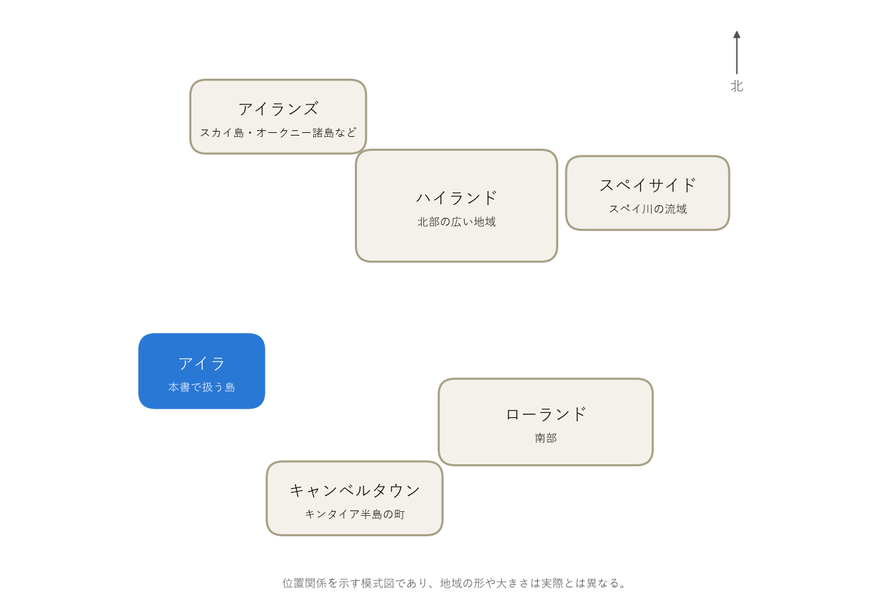

第 1 章 ウイスキーの基礎
アイラウイスキーの話に入る前に、本章ではウイスキーそのものの基本を説明する。ウイスキーとは何か、どのような種類があり、どのように造られるのか、そしてアイラを含むスコッチウイスキーがどのように定められているのかを順に見ていく。
ウイスキーとは
ウイスキーは、大麦・トウモロコシ・ライ麦・小麦などの穀物を原料とし、次の手順で造る蒸留酒である。
日本の酒税法やスコットランドの法令など、ウイスキーの定義は国や地域ごとに法令で定められている。共通しているのは「穀物が原料であること」と「蒸留したものであること」であり、樽での熟成を義務付けている国も多い。透明だった蒸留直後の液体が琥珀色になり、香りや味わいが複雑になるのは、主に樽での熟成による。
世界の主な産地
ウイスキーは世界中で造られているが、特に生産量や歴史で知られる 5 つの産地を「5 大ウイスキー」と呼ぶ（表 2）。
名称 |
産地 |
主な特徴 |
|---|---|---|
スコッチウイスキー |
スコットランド（イギリス） |
大麦麦芽を使うモルトウイスキーと、ブレンデッドウイスキーが中心。地域ごとに個性があり、アイラもその 1 つである。 |
アイリッシュウイスキー |
アイルランド島 |
3 回蒸留による軽快で滑らかなものが多い。 |
アメリカンウイスキー |
アメリカ |
トウモロコシを主原料とするバーボンが代表。バーボンは内側を焦がした新しいオーク樽で熟成する。 |
カナディアンウイスキー |
カナダ |
ライ麦などを使った軽快なものが多い。 |
ジャパニーズウイスキー |
日本 |
スコッチを手本に発展した。日本洋酒酒造組合の自主基準（2021 年制定）で表示の条件が定められている。 |
原料と製法による分類
ウイスキーは、原料と蒸留方法によって図 1のように分類できる。
図 1 原料と製法による分類
モルトウイスキー：製麦した大麦（大麦麦芽、モルト）だけを原料とし、ポットスチル（単式蒸留器）で蒸留する。原料や製法の個性が香味に強く表れる。
グレーンウイスキー：トウモロコシや小麦などを主な原料とし、連続式蒸留機で蒸留する。軽く穏やかな香味になる。
シングルモルト：1 つの蒸留所で造ったモルトウイスキーだけを瓶詰めしたもの。複数の樽を混ぜていても、同じ蒸留所のものであればシングルモルトである。
ブレンデッドモルト：複数の蒸留所のモルトウイスキーを混ぜたもの。
ブレンデッドウイスキー：モルトウイスキーとグレーンウイスキーを混ぜたもの。世界で飲まれているスコッチの多くはブレンデッドウイスキーである。
アイラ島の蒸留所が造っているウイスキーは、すべてモルトウイスキーである。そのため本書では、主にシングルモルトを扱う。
モルトウイスキーの造り方
モルトウイスキーは図 2の工程で造る。
図 2 モルトウイスキーの製造工程
- 製麦
大麦を水に浸して発芽させ、でんぷんを糖に変える酵素を作らせる。発芽が進みすぎる前に熱風で乾燥させて止める。この乾燥室をキルンと呼ぶ。乾燥の燃料にピートを使うと、麦芽に煙の香りが付く。アイラウイスキーのスモーキーさは主にこの工程から生まれる（第 5 章 ピートとスモーキーさ）。
- 粉砕・糖化
麦芽を粉砕し、温水と混ぜて麦芽の酵素ででんぷんを糖に変える。糖を含む甘い液体を麦汁という。
- 発酵
麦汁に酵母を加え、発酵槽で 2〜4 日程度（蒸留所によって異なる）発酵させる。アルコール度数 7〜9 % 程度の、ビールに似た液体（もろみ）ができる。
- 蒸留
もろみをポットスチルで 2 回蒸留する。1 回目の蒸留（初留）でアルコール度数 20 % 台の液体を得て、2 回目の蒸留（再留）でさらに濃縮する。再留では、最初に出てくる部分（ヘッド）と最後に出てくる部分（テール）を除き、香味のよい中間の部分（ハート）だけを取り出す。これをミドルカットと呼ぶ。取り出した液体をニューメイク（ニュースピリッツ）と呼び、アルコール度数は 70 % 前後である。
- 熟成
ニューメイクを木の樽に詰めて寝かせる。樽の木材から色や香りの成分が溶け出し、また、樽の中で成分がゆっくり変化して、香味がまろやかで複雑になる。熟成中には、樽の中身が毎年少しずつ蒸発して減る。これをエンジェルズシェア（天使の分け前）と呼ぶ。
- 瓶詰め
熟成を終えた原酒を、必要に応じて複数の樽から混ぜ合わせ、水を加えてアルコール度数を調整し、瓶に詰める。樽から出したままの度数で瓶詰めしたものをカスクストレングスと呼ぶ。
スコッチウイスキーの定義
アイラウイスキーはスコッチウイスキーの一種である。スコッチウイスキーは、イギリスの法令「The Scotch Whisky Regulations 2009」で、主に次のように定められている。
スコットランドの蒸留所で、水と穀物を原料に造る。
蒸留時のアルコール度数は 94.8 % 未満とする。
容量 700 L 以下のオーク樽に詰め、スコットランドで 3 年以上熟成する。
瓶詰め時のアルコール度数は 40 % 以上とする。
水と、色をそろえるためのカラメル色素（E150a）以外は加えない。
シングルモルトスコッチウイスキーは、さらに「1 つの蒸留所で、大麦麦芽だけを原料に、ポットスチルで蒸留したもの」と定められている。また、2012 年からは、シングルモルトスコッチウイスキーはスコットランドで瓶詰めしなければならない。
スコッチの生産地域
スコッチウイスキーの生産地域は、一般に図 3と表 3の 6 つに分けて紹介される。


図 3 スコッチの生産地域の位置関係（模式図）
地域 |
概要 |
|---|---|
ハイランド |
スコットランド北部の広い地域。地域が広いため、香味の幅も広い。 |
スペイサイド |
ハイランドの北東部、スペイ川の流域。蒸留所が最も多く集まる。華やかで果実のような香りのものが多い。 |
ローランド |
スコットランド南部。軽快で穏やかなものが多い。 |
キャンベルタウン |
西部のキンタイア半島の先端にある町。かつては多くの蒸留所があったが、現在は少ない。 |
アイラ |
西岸沖のアイラ島。ピートを効かせたスモーキーで力強いものが多い。 |
アイランズ |
アイラ島以外の島々（スカイ島、オークニー諸島、ジュラ島など）。法令上はハイランドに含まれるが、別の地域として扱われることが多い。 |
このうち、ハイランド・ローランド・スペイサイド・キャンベルタウン・アイラの 5 つは、法令で地理的表示として保護されている。アイラは、1 つの島がまるごと 1 つの地域として扱われている点で特徴的である。次章では、このアイラのウイスキーがどのようなものかを見ていく。